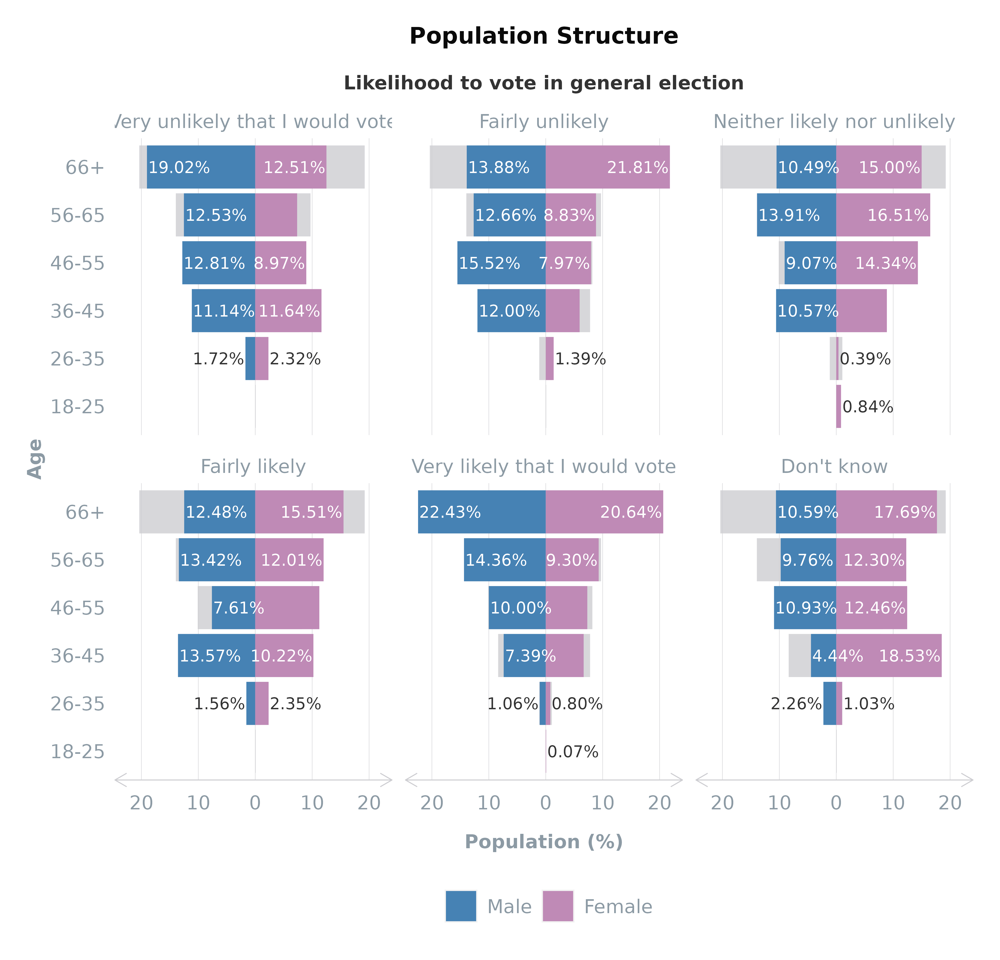
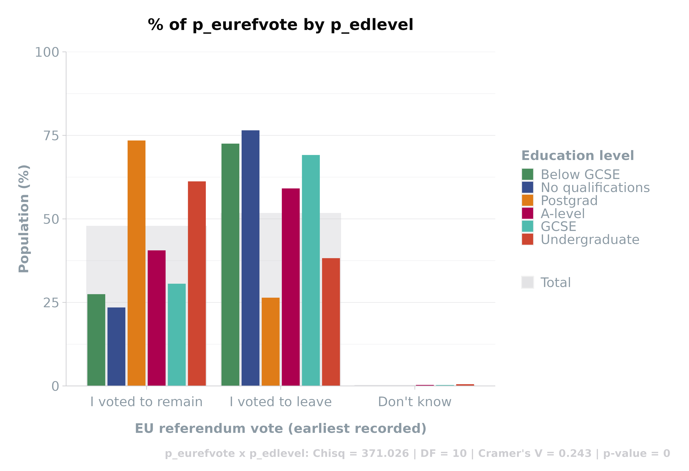
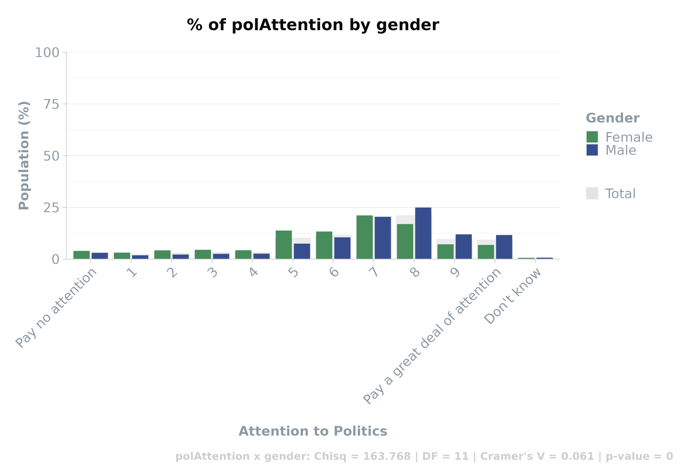

Using scgUtils with Survey Data
Source:vignettes/articles/using-survey-data.rmd
using-survey-data.rmdThis article will take you through the steps of uploading,
processing, and exploring survey data using the scgUtils
package in R. Our journey will cover the nuances of handling survey
datasets, from the initial loading of the data to the advanced stages of
analysis and visualisation.
Step 1: Upload the Sample Dataset
The process begins with loading your dataset. The
scgUtils package offers two main functions for this
purpose: get_data() and get_file().
Using get_data(): This function is
ideal for loading datasets directly from R packages. It streamlines the
process of importing and naming your dataset in the R environment.
# Example of loading and preprocessing a dataset
df <- get_data("survey") %>%
labelled::unlabelled() %>% # Convert 'haven_labelled' data to standard format
process_factors() # Remove unused factor levelsNote: The sample data is a subset of the British Electoral
Survey. For full data, visit British
Election Study.
Using
get_file(): When working with external data files,
such as .sav or .csv, get_file() becomes invaluable. It not only imports
the data but also preprocesses it, handling special characters and
facilitates the conversion of specialised data types, such as
haven_labelled, into standard R formats, making it a robust
choice for various data sources.
# Using the `get_file function option which includes the above preprocessing.
df <- get_file("inst/extdata/survey.sav")
head(df[, 1:6])| id | wt | turnoutUKGeneral | generalElectionVote | partyIdStrength | partyId |
|---|---|---|---|---|---|
| 7 | 0.3755288 | Very likely that I would vote | Scottish National Party (SNP) | Fairly strong | Scottish National Party (SNP) |
| 14 | 0.5528756 | Very likely that I would vote | Conservative | Not very strong | Labour |
| 15 | 0.7122303 | Very likely that I would vote | Brexit Party/Reform UK | Fairly strong | Brexit Party/Reform UK |
| 18 | 0.4396403 | Fairly likely | Scottish National Party (SNP) | Not very strong | No - none |
| 19 | 0.3613798 | Very likely that I would vote | Labour | Very strong | Labour |
| 24 | 1.6864884 | Very likely that I would vote | Green Party | NA | No - none |
For detailed uploading instructions, refer to the Uploading & Cleaning Data article.
Step 2: Viewing the Full Dataset
After uploading the data, it’s important to understand its structure
and content. The sjPlot package’s view_df()
function provides an interactive HTML view of your dataset, allowing for
an immediate and comprehensive examination of the data’s attributes,
frequencies, and percentages. This step is crucial for identifying the
nature of variables, understanding their distribution, and planning
further data processing strategies.
sjPlot::view_df(df[, 1:10], # NB first 10 variables shown only in this example
weight.by = "wt",
show.type = TRUE, # show whether variable is numeric or categorical
show.wtd.frq = TRUE, # display weighted frequency
show.wtd.prc = TRUE, # display weighted %
)Step 3: Weighting the Data
Survey data analysis sometimes necessitates weighting to address
issues like sample design or response biases. Future developments in
scgUtils will introduce user-friendly functions for
applying weights, ensuring your analysis reflects the intended
population accurately.
Step 4: Processing the Data
Survey data often requires specific processing steps to ensure it is
analysis-ready. This may involve creating new variables, recoding
factors, handling missing values, and more. Future developments of the
scgUtils package will aim to simplify these tasks,
providing tools that streamline data preparation and enhance its quality
for subsequent analysis.
Step 5: Exploring the Data
Exploring survey data effectively demands a nuanced approach to both
numeric and categorical data. The scgUtils package,
complemented by base R functionalities, offers a comprehensive toolkit
for this exploration.
Numeric data
Numeric data, such as age, income, or survey ratings, can reveal
significant trends and patterns when analysed correctly.
Summary Statistics
Begin with
summary() for a quick overview, offering key statistical
measures.
summary(df$age)
#> Min. 1st Qu. Median Mean 3rd Qu. Max.
#> 18.00 55.00 66.00 63.58 73.00 93.00For group-wise insights, tapply() combined with
summary() allows you to dissect the data based on
categories like gender or education level, providing a clearer
understanding of distribution across different segments.
# By group:
tapply(df$age, df$gender, summary)
#> $Male
#> Min. 1st Qu. Median Mean 3rd Qu. Max.
#> 30.00 56.00 66.00 64.15 74.00 93.00
#>
#> $Female
#> Min. 1st Qu. Median Mean 3rd Qu. Max.
#> 18.00 54.00 66.00 62.97 73.00 93.00Mean Calculation
Average calculations,
both weighted and unweighted, are crucial in survey analysis. Utilise
mean() for simple averages and weighted.mean()
for more complex scenarios where survey design needs to be accounted
for.
# Unweighted:
mean(df$age)
#> [1] 63.5824
# Weighted:
weighted.mean(df$age, df$wt)
#> [1] 60.17577Grouped Mean with
grp_mean()
For advanced analysis,
grp_mean() elegantly calculates group-wise means. It
simplifies the process of aggregating data across one or more
categorical variables, offering an efficient alternative to more verbose
methods like those in dplyr.
# By a single group:
grp_mean(df,
meanVar = "age",
groups = "gender",
weight = "wt" # optional
)
# `dplyr` equivalent:
# df %>%
# group_by(gender) %>%
# summarise(Mean = weighted.mean(age, wt)) %>%
# ungroup()| gender | Mean |
|---|---|
| Male | 60.14175 |
| Female | 60.21559 |
# By many groups:
grp_mean(df,
meanVar = "age",
groups = c("gender", "partyId"),
weight = "wt", # optional
set_names = c("Gender", "Party Identification", "Average Age"), # optional: change names
round_decimals = 2 # optional: round decimal places to 2 digits
) %>%
head()
# `dplyr` equivalent:
# df %>%
# group_by(gender, partyId) %>%
# summarise(`Average Age` = weighted.mean(age, wt)) %>%
# ungroup() %>%
# rename(Gender = gender, `Party Identification` = partyId) %>%
# head()| Gender | Party Identification | Average Age |
|---|---|---|
| Male | Conservative | 64.60 |
| Female | Conservative | 65.86 |
| Male | Labour | 59.81 |
| Female | Labour | 59.29 |
| Male | Liberal Democrat | 60.44 |
| Female | Liberal Democrat | 59.71 |
Categorical data
Categorical data typically includes demographics or multiple-choice
responses. Analysing these effectively unlocks insights into respondent
behaviours and preferences.
Grouped Frequencies with
grp_freq()grp_freq() shines
in its ability to provide detailed frequency and percentage breakdowns
across various groups. It’s capable of handling both weighted and
unweighted data, adding depth and precision to your categorical data
analysis.
# By a single group:
grp_freq(df,
groups = "partyId",
weight = "wt", # optional
addPercent = TRUE # optional
) %>%
head()
# `dplyr` equivalent:
# df %>%
# group_by(partyId) %>%
# summarise(Freq = sum(wt)) %>%
# ungroup() %>%
# mutate(Perc = Freq / sum(Freq)) %>%
# head()| partyId | Freq | Perc |
|---|---|---|
| Conservative | 1167.9802 | 29.264551 |
| Labour | 963.5791 | 24.143139 |
| Liberal Democrat | 232.9101 | 5.835724 |
| Scottish National Party (SNP) | 101.8282 | 2.551375 |
| Plaid Cymru | 14.6336 | 0.366655 |
| Green Party | 100.3786 | 2.515055 |
# By many group:
grp_freq(df,
groups = c("partyId", "gender"),
weight = "wt", # optional
groupsPercent = "partyId", # optional
round_decimals = 2 # optional: round decimal places to 2 digits
) %>%
head()
# `dplyr` equivalent:
# df %>%
# group_by(partyId, gender) %>%
# summarise(Freq = sum(wt)) %>%
# ungroup() %>%
# group_by(partyId) %>%
# mutate(Perc = Freq / sum(Freq)) %>%
# ungroup() %>%
# head()| partyId | gender | Freq | Perc |
|---|---|---|---|
| Conservative | Male | 663.95 | 56.85 |
| Labour | Male | 496.94 | 51.57 |
| Liberal Democrat | Male | 129.14 | 55.45 |
| Scottish National Party (SNP) | Male | 48.73 | 47.85 |
| Plaid Cymru | Male | 8.81 | 60.20 |
| Green Party | Male | 60.48 | 60.25 |
*Two-by-Two Tables with crosstab()
Creating detailed cross-tabulations is seamless with
crosstab(). This function not only structures your data
into insightful two-by-two tables but also allows for the inclusion of
additional statistical measures. Customise the output format to fit your
analytical needs, whether in wide or long data formats.
crosstab(df,
rowVar = "partyId",
colVar = "gender",
weight = "wt", # optional
format = "df_wide",
round_decimals = 2, # optional
statistics = TRUE # optional
) %>%
head()#> [1] "partyId x gender: Chisq = 29.054 | DF = 9 | Cramer's V = 0.028 | p-value = 0.001"| partyId | Total | Female | Male |
|---|---|---|---|
| Conservative | 29.26 | 27.41 | 30.85 |
| Labour | 24.14 | 25.38 | 23.09 |
| Liberal Democrat | 5.84 | 5.64 | 6.00 |
| Scottish National Party (SNP) | 2.55 | 2.89 | 2.26 |
| Plaid Cymru | 0.37 | 0.32 | 0.41 |
| Green Party | 2.52 | 2.17 | 2.81 |
crosstab(df,
rowVar = "partyId",
colVar = "gender",
weight = "wt", # optional
format = "df_long", # default option
round_decimals = 2, # optional
totals = FALSE, # optional
convert_to = "frequency"
) %>%
head()| partyId | gender | Freq |
|---|---|---|
| Conservative | Male | 663.95 |
| Labour | Male | 496.94 |
| Liberal Democrat | Male | 129.14 |
| Scottish National Party (SNP) | Male | 48.73 |
| Plaid Cymru | Male | 8.81 |
| Green Party | Male | 60.48 |
Efficiently Combine Statistics with
compile()
When dealing with numerous
variables, compile() is your go-to function. It can create
a comprehensive data frame of all relevant statistics like Chi-square,
Degrees of Freedom, Cramer’s V, and p-value, streamlining the
statistical analysis process.
# the row variables are typically your questions within the survey. For ease, utilise dplyr to select the variables
rowVars <- names(df %>% dplyr::select(turnoutUKGeneral:partyIdStrength,
partyIdSqueeze:likeGrn,
pcon:p_hh_size,
p_disability:p_past_vote_2019,
p_eurefturnout))
# the column variables tend to be the demographic variables
colVars <- c("gender", "ageGroup", "p_socgrade", "partyId", "p_eurefvote", "p_edlevel")
# compile stats and save to data frame called `stats`
stats <- compile(df,
rowVars = rowVars,
colVars = colVars,
weight = "wt", # optional
save = FALSE, # turn this to FALSE to prevent saving as a .csv
format = "statistics")
# View first 10, sorted by Cramer's V
head(stats[order(-stats$CramersV),], 10)| Row_Var | Col_Var | Size | Chisq | DF | CramersV | p_value | |
|---|---|---|---|---|---|---|---|
| 10 | generalElectionVote | partyId | 3953.314 | 10049.807 | 81 | 0.531 | 0 |
| 316 | p_past_vote_2017 | partyId | 3545.672 | 5251.916 | 72 | 0.430 | 0 |
| 52 | bestOnMII | partyId | 3719.803 | 5886.195 | 81 | 0.419 | 0 |
| 310 | p_past_vote_2015 | partyId | 3567.690 | 5054.699 | 81 | 0.397 | 0 |
| 258 | p_education_age | p_edlevel | 3465.861 | 3157.122 | 30 | 0.390 | 0 |
| 322 | p_past_vote_2019 | partyId | 3551.306 | 4736.332 | 90 | 0.365 | 0 |
| 248 | p_job_sector | ageGroup | 3991.109 | 1706.840 | 20 | 0.327 | 0 |
| 200 | p_work_stat | ageGroup | 3991.109 | 2857.155 | 35 | 0.320 | 0 |
| 298 | p_past_vote_2010 | partyId | 3511.013 | 3182.663 | 81 | 0.317 | 0 |
| 304 | p_past_vote_2005 | partyId | 3222.173 | 2868.127 | 81 | 0.314 | 0 |
Grid data
Grid questions, common in surveys, pose unique analytical challenges
due to their format.
Handling Grid Data with
grid_vars()grid_vars() is
tailor-made for such data, turning complex grid questions into
analysable formats. It’s particularly adept at handling “select all that
apply” questions or grid-type responses, transforming them into a format
conducive to comparison and visualisation with libraries such as ggplot2.
# Create a named list of the columns that relate to the question
vars <- list(likeSunak = "Rishi Sunak",
likeStarmer = "Keir Starmer",
likeCon = "Conservative Party",
likeLab = "Labour Party",
likeLD = "Lib Dems",
likeSNP = "SNP",
likePC = "Plaid Cymru",
likeBrexitParty = "Brexit Party",
likeGrn = "Green Party"
)
grid_vars(df,
vars = vars,
weight = "wt" # optional
) %>%
head()| Question | Response | Freq | Perc |
|---|---|---|---|
| Brexit Party | Strongly dislike | 1369.44 | 34.31 |
| Conservative Party | Strongly dislike | 1260.06 | 31.57 |
| Green Party | Strongly dislike | 810.10 | 20.30 |
| Keir Starmer | Strongly dislike | 850.59 | 21.31 |
| Labour Party | Strongly dislike | 839.85 | 21.04 |
| Lib Dems | Strongly dislike | 776.15 | 19.45 |
Implementing grid_vars() by
Group
Enhance the functionality of
grid_vars() by applying it with a group variable. This
allows for dissecting responses across different demographic or
categorical segments, providing richer, more targeted insights.
| Question | Response | gender | Freq | Perc |
|---|---|---|---|---|
| Brexit Party | Strongly dislike | Male | 825.56 | 38.36 |
| Conservative Party | Strongly dislike | Male | 706.28 | 32.81 |
| Green Party | Strongly dislike | Male | 548.62 | 25.49 |
| Keir Starmer | Strongly dislike | Male | 511.98 | 23.79 |
| Labour Party | Strongly dislike | Male | 478.74 | 22.24 |
| Lib Dems | Strongly dislike | Male | 498.82 | 23.18 |
Step 6: Visualising the Data
Effective visualisation is key in survey data analysis, offering a
way to intuitively understand and communicate complex data patterns. The
scgUtils package provides specialised functions like
plot_popn() for demographic analysis and
plot_sankey() for flow visualisation, helping you to not
only understand your data but also to present it in a compelling and
insightful manner.
Population structure
Understanding the demographic breakdown of survey respondents is
crucial in many analyses.
Using plot_popn()
The
plot_popn function is designed to visualise the population
structure of your survey respondents. It creates a population pyramid
showing distributions across gender and age groups. If a variable like
average age (meanVar) is specified, the plot can also
display this information, adding another layer of insight into the
demographic composition.
plot_popn(data = df,
xVar = "gender",
yVar = "ageGroup",
weight = "wt", # optional
meanVar = "age", # optional (must be numeric)
addLabels = TRUE # to add % labels
)Faceting by Group
Enhance your
population pyramid by faceting the plot_popn plot by a
specific group, such as voter turnout. This feature overlays the
selected group’s data onto the total population structure, providing a
comparative view that highlights differences or similarities within
subgroups.
plot_popn(data = df,
xVar = "gender",
yVar = "ageGroup",
group = "turnoutUKGeneral",
weight = "wt", # optional
addLabels = TRUE # to add % labels
)
Crosstabs
Crosstabulation is a fundamental technique in survey analysis, especially when examining relationships between categorical variables.
Visualising Crosstabs with
crosstab()
The crosstab
function, when used with the plot = TRUE option, turns your
data into insightful visual crosstabs. This not only aids in
understanding the distribution of responses but also includes
statistical measures for deeper analysis.
crosstab(df,
rowVar = "p_eurefvote",
colVar = "p_edlevel",
weight = "wt",
plot = TRUE,
statistics = TRUE,
round_decimals = 2
) %>%
head()#> [1] "p_eurefvote x p_edlevel: Chisq = 371.026 | DF = 10 | Cramer's V = 0.243 | p-value = 0"
| p_eurefvote | p_edlevel | Freq | Perc |
|---|---|---|---|
| I voted to remain | No qualifications | 56.18 | 23.49 |
| I voted to leave | No qualifications | 182.98 | 76.51 |
| Don’t know | No qualifications | 0.00 | 0.00 |
| I voted to remain | Below GCSE | 43.66 | 27.47 |
| I voted to leave | Below GCSE | 115.30 | 72.53 |
| Don’t know | Below GCSE | 0.00 | 0.00 |
Adjusting for Readability
For plots
with numerous variables along the X-axis, adjustX = TRUE
rotates the labels for better readability, ensuring that even dense data
remains accessible and interpretable.
crosstab(df,
rowVar = "polAttention",
colVar = "gender",
weight = "wt",
plot = TRUE,
statistics = TRUE,
adjustX = TRUE,
round_decimals = 2
) %>%
head()#> [1] "polAttention x gender: Chisq = 163.768 | DF = 11 | Cramer's V = 0.061 | p-value = 0"
| polAttention | gender | Freq | Perc |
|---|---|---|---|
| Pay no attention | Male | 65.46 | 3.04 |
| 1 | Male | 39.89 | 1.85 |
| 2 | Male | 47.53 | 2.21 |
| 3 | Male | 54.82 | 2.55 |
| 4 | Male | 56.93 | 2.64 |
| 5 | Male | 161.07 | 7.48 |
Flow data
Flow visualisation helps in understanding how different categories of
respondents transition between various stages or choices. The
plot_sankey function is instrumental in depicting the flow
of data, especially useful in understanding voting patterns or changes
in preferences over time.
Preparing Data with
grp_freq()
Before visualising, prepare
your data using grp_freq(), which aggregates frequencies
necessary for the Sankey diagram.
# Subset the required columns from the dataset
sankey_df <- df[, c("wt", "generalElectionVote", "p_past_vote_2019")]
# Get the frequency
sankey_df <- grp_freq(sankey_df,
groups = c("generalElectionVote", "p_past_vote_2019"),
weight = "wt", # optional
round_decimals = 0, # optional
)
head(sankey_df)
# NB. The `dplyr` equivalent is:
# df %>%
# group_by(generalElectionVote, p_past_vote_2019) %>%
# summarise(Freq = sum(wt))| generalElectionVote | p_past_vote_2019 | Freq |
|---|---|---|
| I would/did not vote | Conservative | 75 |
| Conservative | Conservative | 793 |
| Labour | Conservative | 124 |
| Liberal Democrat | Conservative | 50 |
| Scottish National Party (SNP) | Conservative | 2 |
| Plaid Cymru | Conservative | 2 |
Customising the Sankey Diagram
The
plot_sankey() function offers extensive customisation,
allowing the diagram to be tailored to specific data narratives. The
colour_prep() function enhances this customisation by
facilitating the assignment of meaningful colours based on categories
like political party affiliations. Such customisation not only improves
the aesthetic appeal of the Sankey diagram but also boosts its
interpretability and effectiveness in conveying complex data flows.
plot_sankey(sankey_df,
source = "p_past_vote_2019", # on the left side
target = "generalElectionVote", # on the right side
value = "Freq",
units = " votes",
colours = colour_prep(df, c("generalElectionVote", "p_past_vote_2019"), pal_name = "polUK"),
fontSize = 16, # change font size
fontFamily = "Calibri", # default
nodeWidth = 20, # default
nodePadding = 10, # default
margin = list(top = 0, right = 130, bottom = 0, left = 0), # adjust the margin
width = 1200, # default
height = 800, # default
shiftLabel = NULL, # default
heading = "Flow of Votes",
sourceTitle = "2019 Vote",
targetTitle = "VI"
) # %>%
# save from viewer to html
# htmlwidgets::saveWidget(file = "sankey_VI.html", selfcontained = TRUE)Other Visualisations
For a broader spectrum of visualisation techniques and detailed
guidance on effectively using colour in your plots, refer to the Visualising Data article and Creating Colour
Palettes article. These resources provide additional insights into
making the most of the scgUtils package for visualising
complex survey data.
Step 7: Presenting the Results
Presenting the results of your survey analysis in a clear and
impactful way is crucial. The scgUtils package offers
functionalities that aid in creating detailed and informative
presentations.
Tables
Tables are fundamental tools for presenting complex data in a
structured and easily interpretable format.
Extending compile() for Comprehensive
Tables
The compile() function in
scgUtils excels in generating comprehensive crosstab
tables. It efficiently processes each variable pair within your dataset,
producing detailed tabular outputs. These tables can be formatted and
saved as CSV files, making them perfect for inclusion in reports or
further analysis. The ability to create such extensive tables is
invaluable for presenting a holistic view of your survey results,
encompassing various aspects and relationships within your data.
rowVars <- names(df %>% dplyr::select(turnoutUKGeneral:partyIdStrength,
partyIdSqueeze:likeGrn,
pcon:p_hh_size,
p_disability:p_past_vote_2019,
p_eurefturnout))
colVars <- c("gender", "ageGroup", "p_socgrade", "partyId", "p_eurefvote", "p_edlevel")
compile(df,
rowVars = rowVars,
colVars = colVars,
weight = "wt", # optional
name = "crosstabs" # this will save as "crosstabs.csv"
)
Visual Representation of Compiled
Tables
To add visual appeal and enhance
interpretability, future additions to the scgUtils package
will include the ability to view compiled tables graphically.
PowerPoint Integration
In future updates, scgUtils aims to incorporate
capabilities for directly exporting analysis results into PowerPoint
presentations. This functionality will facilitate seamless integration
of your data findings into professional and engaging presentation
formats, suitable for various audiences.
Interactive Dashboards
Another upcoming feature is the ability to create interactive dashboards directly from your survey data. Dashboards offer a dynamic way to explore and present data, allowing users to interact with the information, drill down into specifics, and gain a deeper understanding of the underlying patterns. This functionality will be a significant enhancement, providing a powerful tool for data storytelling and decision-making processes.